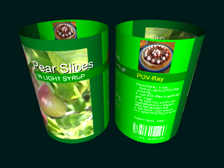

POV-Ray Object Collection
|
The macros generate a label object and map the required texture to it. There are also standard include files to provide pre-defined labels so all you need to do is include one of the standard files and call the 'Labeller' macro.
This document contains all of the information you need to add any of the standard labels to your POV-Ray scene file.
To make a label of your own you can copy the settings and the design files from a label that's close to what you want and simply adjust the the size, the shape and the graphical design, adding or removing text or graphics to taste. The download includes plenty of examples to show you how to use these macros and the standard label include files, but you will need to understand how POV-Ray pigments work and, in particular, the 'object' pigment, to develop your own label designs.
To install, simply unzip all of the files into a folder in your POV-Ray 'include files' path. There are quite a few files, but most are examples and documentation. If you want to distribute an object or a POV-Ray scene that incorporates a label, you only need to include a copy of the file 'labeller.inc', the settings and design files that define your label and any additional files you've used in the label design (e.g. if an image map is used).
WARNING A number of different true-type fonts are used within the sample label definitions to add text to labels. If you don't have the required true-type font, "arial.ttf" will be used instead. In this case rendered images may differ in that respect from the graphics in this document. You can of course update the font settings in the design files. Most systems have 'arial.ttf', though this may not give results that look anything like the original font. System fonts are often stored in a single directory e.g. 'C:\WINNT\Fonts' enabling you to easily list the file names for the fonts on your system.
|
'Price' ink bottle label. | You can create your own labels based on the standard ones by copying the standard files and changing the settings and the label design (see Designing New Labels below). The settings tell the macros about the size and shape of the label and of the container that the label needs to fit onto. The design can be as simple as a scanned image, but you can also build up as many layers as you like using combinations of POV-Ray text, patterns and image maps. Each design file contains a little bit of magic to render a flattened version so that you can see the whole thing while you're working on it. Of course, whenever you want, you can add your label to a scene file to see how it looks wrapped into it's finished shape. |
Design Mode with Labeller_LabelDesignSegment set to '2'. |
|
There are macros to handle flat labels, cylinders, rounded boxes and polyhedrons with configurable bevels and edge rounding. The label design can incorporate transparency to enable the outline of the label to deviate from the rectangular form. The example on the right uses transparency in the label design to create a diamond on the front face, with a thin band stretching round the rest of the container.
These macros are therefore able to generate a very wide range of label shapes. If you do find a shape that you can't handle with the existing macros you can add a macro of your own to meet your specific needs. For example, if you need uv-mapping to wrap your label around a particularly complex surface you can add a short macro to suit your needs. Alternatively you have the freedom to use the design mode features to help you to lay out the design of your label and you can opt to handle the mapping completely within your scene file. |
The main file in this distribution is the 'labeller.inc' file which is an include file that contains the Labeller macros. These macros create an object representing a thin paper or plastic label on a container. A label is generated based upon the settings of a range of control variables (all of which have default values). The standard labels each come with an include file that contains all of the settings you need for that label (see Files below).
The label design is stored in a separate file and enables you to easily specify/modify layers of pigments. Each layer can be based upon combinations of POV-Ray text strings, standard pigments (e.g. marble, object pigments for squares, circles etc) and image_maps. The design file incorporates a mechanism to assemble these layers into a preview style, flattened form, making it easy for you to see the whole surface of the label as you're working on it.
The polyhedron design mode allows you to visualise each of the surfaces of your polyhedron separately, turning the surface of your choice into view so that it's the right way up for you to work on (just set Labeller_LabelDesignSegment to be the number of the face you want to work on). It supports multiple sets of layers of pigment, so you can specify a set of pigments to be applied to all surfaces as well as a separate set of pigments for each individual surface.
Numerous examples are provided below and in the file 'labeller.pov', which illustrates the use of the labeller macros and of the supporting files. At least one include file is provided to illustrate each type of label and contains appropriate settings for the dimensions and shape that match a particular label design.
Dimensions are specified in metres. The ScaleConvert macro from the POV-Ray Object Collection can be used to convert between different units of measure. The Labeller macros were created by Chris Bartlett in February 2008 based upon ideas that came out of the 'Office Supplies' theme devised by Ben Chambers for the POV-Ray Object Collection at http://lib.povray.org/ and are licensed under the terms of the CC-LGPL.
At the bottom of each settings file is a redefinition of the 'Labeller' macro to invoke the appropriate macro for the label being described. For example, the settings file 'labeller_pears.inc' sets the 'Labeller' macro to call the 'Labeller_Cylinder' macro because the label is designed to map to a cylinder.
The second dimension of this array can be as big or as small as you need to enable you to organise the layers of pigment. For a cylindrical label you may therefore have a definition of '#declare Labeller_LabelLayer = array[2][30];' and for an octagonal polyhedron you might have a definition of '#declare Labeller_LabelLayer = array[9][20];'.
The layers of pigment are assembled in ascending order with '0' being applied first and the remaining shapes being built up on top. The upper layers require transparency to be defined to enable lower levels to be visible. By specifying areas that are transparent in all layers it is possible to define a label with 'holes' in it. Because the macro returns a solid object that you can perform CSG operations against, you can also punch holes out of it in your scene file if you wish (e.g. simulating wear and tear).
For flat, cylindrical and rounded box style labels, whether you put a layer of pigment into a 'base' layer (an element of the 'Labeller_LabelLayer' array where the first index is '0') or in another layer is largely a matter of choice.
|
For labels designed to work with the Labeller_Polyhedron macro the choice has added significance. The Labeller_Polyhedron macro applies elements in the 'base' layer to all of the faces and those pigments will be aligned to the top and bottom edges. Pigments specified in other array elements will be applied onto the faces corresponding to the index used and will be aligned with a particular face. The impact of this when applied to a polyhedron is best explained with an example:
The 'price' ink bottle design on the right incorporates a top border and a bottom border that have been applied to the 'base' layer. This therefore runs around all of the faces of the label and remains parallel to the top and bottom edges of the label. On the other hand, all of the text has been applied to a single face (in this case face 2). As you can see, the text 'BLUE WRITING' wraps around onto the adjacent edges, but remains aligned to the face to which it has been applied.
|
|
You can assign almost any pigment to the 'Labeller_LabelLayer' array. There are many examples of how to assign single lines of text, multiple lines of text, simple POV-Ray objects and image maps incorporated into the sample design files. You can copy snippets from any of these files to your own design file and adapt the techniques shown to your own needs.
You don't need to use all layers of the Labeller_LabelLayer array, indeed it is sensible to leave some gaps at reasonable places in case you subsequently need to add a layer of pigment between two others. For example, you may choose to use Labeller_LabelLayer[1][0] through Labeller_LabelLayer[1][6] for a group of associated pigments then Labeller_LabelLayer[1][11] through to Labeller_LabelLayer[1][15] for the next group. If you need to add a layer in the middle of a group you then only need to renumber a small number of layers.
When you add layers it is very easy to make the mistake of copying a layer and forgetting to renumber it. If this happens, the second definition of that array element will overwrite the first and that overridden layer will therefore not appear on the label.
The Labeller macros take the composite texture from the XZ plane and map it to the label object (in truth it takes the texture from very slightly below the XZ plane at a depth of 0.0001 POV-Ray units). The flat label macro generates a label lying on the XZ plane and simply translates the texture upwards (+Y) by the thickness of the label. The other macros create label objects with vertical or tilted sides centred around y=0. For these labels the X dimension of the pigment definition is used to control how far around the object the pigment is positioned and the Z dimension of the texture controls the height on the label (the height above the 'LabellerLabelBottom' setting).
The various macros are designed to preserve dimensions to simulate a flat paper label being physically wrapped around a 3D object.
Generally you only need to follow a simple set of rules when adding layers to the 'Labeller_LabelLayer' array:
| labeller.inc | The main include file for the Labeller object incorporating the macros described above. To distribute a scene containing a label you just need a copy of this file and the settings and design files used to describe your label (along with any image files used as image_maps in the label design). | |
|---|---|---|
| labeller.pov | A sample scene file illustrating the use of all of the standard include files and the Labeller macro. See Examples below for a key to the examples in this file. | |
| labeller.html | This document. | |
| labeller_documentimages.pov | A scene file that generated most of the images used in this document. Images can be generated one at a time or by using the animation settings that are documented in comments at the top of that scene file. | |
Each settings file contains default camera 'location' and 'look_at' settings to enable you to easily frame the label in a quick test scene. To do this you can use the following snippet, just substituting the name of the settings file you're interested in seeing.
If you want to change any of the standard variable settings you should do so after including the settings file and before invoking the 'Labeller' macro:
To render the flattened version of the design of a label simply open the design file in POV-Ray and hit 'Run'.
| labeller_correctingfluid.inc | This settings file contains the settings needed to generate a cylindrical label with rounded corners for a bottle of correcting fluid. The label isn't quite closed at the back, leaving a gap of about 2mm. | |
|---|---|---|
| labeller_correctingfluiddesign.inc | This design file contains the design that appears on the correcting fluid label. The design is made up of multiple layers of text, POV-Ray objects and an image_map for the front panel. It incorporates a mock bar code on the back of the label. You can render this include file to see a flattened version of the label design. | |
| labeller_bottledphotons.inc | This settings file contains the settings needed to generate a label for an octagonal bottle shape. The front and back labels are part of a single label definition with transparent sections in between. | |
| labeller_bottledphotonsdesign.inc | This design file contains the design that appears on the label. The main shape of the front and back sections and of the coloured borders are made of a set of concentric prism objects designed using Inkscape which is an open source vector graphics editor that can save POV-Ray prism objects directly. Text is added to surfaces 3 and 7 of the octagon. The wingding.ttf (True Type Font) is used for the snowflake. If you don't have this font installed, "arial.ttf" will be used instead, altering the appearance of the label. You can render this include file to see a flattened version of the label design. | |
| labeller_bottledphotonsneck.inc | This settings file contains the settings needed to generate a conical label around the neck of a bottle. The polyhedral shape is used with a large number of surfaces. | |
| labeller_bottledphotonsneckdesign.inc | This design file contains the design that appears on the bottle neck label. The base design (layer 0) uses boxes to define the lines that run around the top and bottom of all sections of the label. A block of text is added to either side of the label (surfaces 10 and 30). Although each of these surfaces is too small for the text, the text wraps itself around onto the adjoining surfaces, so is not distorted by the projection onto the conical surface. You can render this include file to see a flattened version of the label design. | |
| labeller_peaches.inc | This settings file contains the settings needed to generate a cylindrical label for a can of peaches. | |
| labeller_peachesdesign.inc | This design file contains the design that appears on the peach can label. The design is made up of multiple layers of text, POV-Ray objects and image maps for the front panel and for the recipe on the back. It incorporates a mock bar code on the back of the label. | |
| labeller_peachesimage.inc | The settings file for 'labeller_peachesimagedesign.inc'. | |
| labeller_peachesimagedesign.inc | This design file uses an image map generated using 'labeller_peachesdesign.inc', resulting in a very simple design file which is quick to render. | |
| labeller_pears.inc | This settings file contains the settings needed to generate a cylindrical label for a can of pears. |  |
| labeller_pearsdesign.inc | This design file contains the design that appears on the pear can label. The design is made up of multiple layers of text, POV-Ray objects and image maps for the front panel and for the recipe on the back. It incorporates a mock bar code on the back of the label. You can render this include file to see a flattened version of the label design. | |
| labeller_conferencepears.inc | This settings file contains the settings needed to generate a cylindrical label for a can of pears. | |
| labeller_conferencepearsdesign.inc | This design file contains the design that appears on the pear can label. The design is made up of multiple layers of text, POV-Ray objects and image maps for the front panel and for the recipe on the back. You can render this include file to see a flattened version of the label design. | |
| labeller_price.inc | This settings file contains the settings needed to generate an 8 sided polygonal label for a bottle of ink. | |
| labeller_pricedesign.inc | This design file contains the design that appears on the ink bottle label. The design is made up of multiple layers of text and POV-Ray objects. It is a simplification of an antique ink bottle label. The wingding.ttf (True Type Font) is used for the pattern around the top and bottom rim of the label. If you don't have this font installed, "arial.ttf" will be used instead, altering the appearance of the label You can render this include file to see a flattened version of the label design. | |
| labeller_polyhedron.inc | This settings file contains the settings needed to generate an 8-sided polyhedron shaped label with bevelled edges. This file serves as a test rig for the polyhedron label macro. This file provides a handy example that you can use to explore the configuration options for the polyhedron label macro. You can, for example, change the top label radius so that it is smaller than the labels bottom radius and adjust the corner rounding and bevel width to see how the surface pigments map to and wrap around the label. | |
| labeller_polyhedrondesign.inc | This design file contains the very simple design that appears on the polyhedral label. The design is made up solely of multiple copies of the POV-Ray logo. You can render this include file to see a flattened version of the label design. | |
| labeller_blackink.inc | This settings file contains the settings needed to generate a rounded box shaped label for a bottle of ink. | |
| labeller_blackinkdesign.inc | This design file contains the design that appears on the ink bottle label. The design is made up of multiple layers of text and POV-Ray objects. It is a completely fabricated design. You can render this include file to see a flattened version of the label design. The 'alger.ttf' (True Type Font) is used for the writing on the front of this label. If you don't have this font installed, "arial.ttf" will be used instead, altering the appearance of the label. | |
| labeller_tusche.inc | This settings file contains the settings needed to generate an 8 sided polygonal label for a bottle of ink. | |
| labeller_tuschedesign.inc | This design file contains the design that appears on the ink bottle label. The design is made up of multiple layers of text and POV-Ray objects. It is a representation of an antique ink bottle label, although the fonts have been changed and the main brand logo is only a very approximate match to the original font. You can render this include file to see a flattened version of the label design. The palscri.ttf (True Type Font) is used for the signature on the front of this label. If you don't have this font installed, "arial.ttf" will be used instead, altering the appearance of the label. | |
| labeller_hazardlabel.inc | This settings file contains the settings needed to generate a flat label. | |
| labeller_hazardlabeldesign.inc | This design file contains the design of a hazardous substances label. The design is made up of multiple layers of text and POV-Ray objects. The POV-Ray objects include a set of prism objects that define the standard hazardous substances icons. These were converted to POV-Ray format using the InkScape SVG editor. The original public domain SVG source files were downloaded from http://commons.wikimedia.org/. |
|
All of the control variables have defaults, so you can generate the default object by just including the 'labeller.inc' file and calling the 'Labeller' macro:
light_source { <-15,7.5,-15>, rgb 2}
camera {location <-0.05,0.06,-0.03> look_at <0,0.02,0>} #include "labeller.inc" Labeller() | |
|
You can apply standard POV-Ray transformations by wrapping the call in an object statement:
object{Labeller() rotate y*180}
You can also use the resulting object in CSG operations.
| |
|
You can add variable definitions to control the size and shape of the generated object before calling the 'Labeller' macro:
light_source { <-1,7.5,-1>, rgb 1}
light_source { <15,-7.5,-4>, rgb 1} camera {location <-0.05,0.06,-0.03> look_at <0,0.02,0>} #include "labeller.inc" #declare Labeller_PolyhedronFaces = 12; #declare Labeller_TopInnerRadius = 0.035; #declare Labeller_BottomInnerRadius = 0.009; #declare Labeller_BevelWidth = 0.008; #declare Labeller_CornerRadius = 0.004; #declare Labeller_PlainBack = 0; #declare Labeller_Normal = normal {crackle 0.6 scale 0.002}; #declare Labeller_Finish = finish {reflection 0.1}; Labeller() | |
|
Further examples can be found in the labeller.pov scene file which generates a scene containing 11 labels as shown in the illustration below. The scene file contains the names of the include files used to generate each label. The numbers in the figure below correspond to the numbers in the comments within the scene file.
| |
There are quite a few files included with the Labeller macros, but most are examples and documentation. If you don't wish to distribute all of these files you only need to include a copy of the file 'labeller.inc', the settings and design files that define your label and any additional files you've used in the label design (e.g. if an image map is used). Indeed, you can further reduce this by copying your settings into the 'Labeller_DefaultSettings' macro and your design into the 'Labeller_DefaultDesign' macro, overwriting the existing default settings and design embedded within the 'labeller.inc' file.
If you plan to submit your object to the POV-Ray Object Collection at http://lib.povray.org/ you will need to rename the files to conform to the naming standards (All files from your submission will need the same unique prefix). The file 'labeller.inc' is referenced once in each settings file and once in each design file. It is also displayed in a #debug message within the 'labeller.inc' file itself. The settings file and the corresponding design file should each refer to each other just once.
Most of the macros listed in the first table are used to each generate a specific type of label based upon settings defined using control variables. Although the macros for each type of label can be called directly, they are often called through the 'Labeller' macro which serves as a generic wrapper for the other label generating macros.
The first table also describes any macros that you may wish to use when designing labels. For example, you can use the 'Labeller_EANBarCode' macro to add an EAN bar code to the design of a label.
| Labeller macro | ||||||||
|---|---|---|---|---|---|---|---|---|
|
The Labeller macro provides a wrapper that enables labels to be generated in a standard way. It is set to call one of the other macros as appropriate for the type of label being generated. By default it is set to generate a polyhedral label.
All of the control variables have defaults, so you can generate the default label object by just including the 'labeller.inc' file and calling the macro:
light_source { <-15,7.5,-15>, rgb 2}
Normally though, rather than including 'labeller.inc' you would include one of the files containing the settings necessary to generate the label of your choice and then call the Labeller macro. Also, you can apply standard POV-Ray transformations by wrapping the macro call inside an object statement:
camera {location <-0.05,0.06,-0.03> look_at <0,0.02,0>} #include "labeller.inc" Labeller()
light_source { <-15,7.5,-15>, rgb 2}
You can also declare an identifier to hold the label object returned by the macroto and use it in the same way you would use any other declared object:
camera {location <-0.06,0.02,-0.02> look_at <-0.03,0.01,0>} #include "labeller_blackink.inc" object{Labeller() rotate <20,0,10> translate <-0.02,-0.01,0>}
#include "labeller_blackink.inc"
#declare MyLabel = Labeller() object{MyLabel rotate <20,0,10> translate <-0.02,-0.01,0>} | ||||||||
| Labeller_Flat macro | ||||||||
| This macro is used to generate a flat label, optionally with rounded edges. This is typical of the sort of label required for addressing envelopes and packages and for sticking on walls, fridges etc. An example of the use of this macro can be found in the files labeller_hazardlabel.inc which uses the design stored in labeller_hazardlabeldesign.inc to create a hazard warning label typical of something you might find on a crate of chemicals. | ||||||||
| Labeller_Cylinder macro | ||||||||
|
This macro is used to generate a cylindrical label. It can generate a label that forms a complete circle or one that covers only part of a cylindrical surface (see 'Labeller_LabelArc' in the Variable Reference section of this document). An example of the use of this macro can be found in the file 'labeller_peaches.inc' which uses the design stored in 'labeller_peachesdesign.inc' to create a label typical of those you find on a can of peaches.
To use this macro to generate 'separate' front and back labels for something such as a wine bottle, you can either define two cylindrical labels that each only partially cover the surface, or you can define a single cylindrical label incorporating completely transparent sections into the design. The cylindrical label object returned by this macro is positioned vertically, centred on the y-axis. | ||||||||
| Labeller_RoundedBox macro | ||||||||
|
This macro is used to generate a label for a box shape with rounded corners. It can generate a label that wraps completely around the box or one that covers only part of the perimeter. An example of the use of this macro can be found in the files labeller_tusche.inc which uses the design stored in labeller_tuschedesign.inc.
The label object returned by this macro has vertical sides, centred around the y-axis. | ||||||||
| Labeller_Polyhedron macro | ||||||||
|
This macro is used to generate a label for a polyhedron with bevelled and rounded edges. The label forms a band which encircles the faces of the polyhedron. Each of the faces of the object to which the label is to be applied need to be the same shape and size and need to be positioned around a regular polygon. An example of the use of this macro can be found in the files labeller_price.inc which uses the design stored in labeller_pricedesign.inc.
The label object returned by this macro can have vertical sides or can have faces angled inwards or outwards at a uniform angle. The label object returned by this macro is centred on the y-axis. | ||||||||
| Labeller_LabelDesign macro | ||||||||
| This macro is used to generate a flattened version of the rectilinear labels mapped to cylinders and rounded boxes. The label lies flat on the XZ plane An example of the use of this macro can be found in all of the design files other than those which are based on the polyhedron. One such example is the file 'labeller_pearsdesign.inc'. | ||||||||
| Labeller_FlattenedPolyhedron macro | ||||||||
| This macro is used to generate a flattened version of a label that has been designed to cover the surfaces of a polyhedron with bevelled and rounded edges. It is the equivalent of the Labeller_LabelDesign macro for non-rectilinear labels. The label lies flat on the XZ plane with the curved edges being replaced by rectangles. If the polyhedrons faces are slanted (top radius not equal to bottom radius) then the segments will be laid out in an arc. If the polyhedrons faces are vertical then the flattened version will form a rectangle. An example of the use of this macro can be found in the design files that use the Labeller_Polyhedron macro such as the file 'labeller_pricedesign.inc'. | ||||||||
| Labeller_EANBarCode macro | ||||||||
This macro creates a barcode in a 1 POV-Ray unit box between <0,0,0> and <1,1,1> with the bars and numbers facing towards -Z and running from 0 to +X. It is an attempt at European Article Number (EAN) barcodes but the technical accuracy is not in any way guaranteed by the author.
Examples of using this macro to add a barcode to a label are contained in design files 'labeller_conferencepearsdesign.inc' and 'labeller_correctingfluiddesign.inc', amongst others.
| ||||||||
| Labeller_Undef macro | |||||||
|---|---|---|---|---|---|---|---|
| The Labeller_Undef macro can be called between calls to the Labeller macros to clear down variable settings. If the settings are not cleared down a later macro call can inherit settings from an earlier call. The standard label include files call this macro to ensure that settings are not carried over. | |||||||
| Labeller_PolyhedronMaths macro | |||||||
| This macro is used to calculate geometric information about a polyhedron based upon the variable settings provided. It is called by both the 'Labeller_Polyhedron' macro and the 'Labeller_FlattenedPolyhedron' macro. Keeping the calculations in a separate, shared macro is intended to provide consistency across the two macros. | |||||||
| Labeller_ApplyRoundedCornerTexture macro | |||||||
This macro applies a texture to the cylindrical shapes used to represent the rounded edges used for the rounded box shaped label. It takes 3 parameters:
| |||||||
| Labeller_ApplyRoundedPolyhedronCornerTexture macro | |||||||
This macro applies a texture to the cylindrical shapes used to represent the rounded edges used for the polyhedron shaped label. It takes 2 parameters:
| |||||||
| Labeller_DisplayDesign macro | |||||||
|
This utility macro is used to add flattened label object and a standard orthographic camera and lighting to a scene file.
This macro is generally only called by the standard piece of code embedded within all design files in order to display a label in design mode. The same macro is used for all label shapes, but needs to know whether it's a shape based on a rectangle or whether it's a shape made up out of segments for a polyhedral shape. It uses this information to adjust the camera to correctly frame the design and to adjust the radius of cylinders used to add axes if variable 'Labeller_ShowAxes' is greater than 0. It uses the setting of variable 'Labeller_LabelDesignClip' to determine whether to clip rectangular designs and 'Labeller_LabelDesignSegment' for Polyhedral designs to frame a particular segment.
The macro takes 2 parameters:
| |||||||
| Labeller_DrawAxes macro | |||||||
This utility macro is used to apply add a pair of axes to a flattened texture in design mode. This macro is invoked by the 'Labeller_DisplayDesign' macro if the 'Labeller_ShowAxes' variable is set to '1' in a design file.
| |||||||
| Labeller_FontCheck macro | |||||||
This utility macro checks whether a font file exists. Otherwise it returns a common one ("arial.ttf"). If you don't have an Arial True Type font on your system you should edit this macro in 'labeller.inc' and substitute the file name of a True Type font that you do have.
| |||||||
| Labeller_PlainBackBoxTexture macro | |||||||
This utility macro adds a layer of texture to suppress the pigment on the back of a box section used to construct a label. This macro is called automatically by all of the Labeller macros if the 'Labeller_PlainBack' variable is set to anything other than '0'. You should not need to use this macro unless you add or modify a Labeller macro.
| |||||||
| Labeller_PlainBackCylinderTexture macro | |||||||
This utility macro adds a layer of texture to suppress the pigment on the back of a cylindrical section used to construct a label. If the 'Labeller_PlainBack' variable is set to anything other than '0', this macro is called automatically by most of the Labeller macros. The 'Labeller_Flat' macro doesn't use this macro because it doesn't incorporate any cylindrical sections. You should not need to use this macro unless you add or modify a Labeller macro.
| |||||||
| Labeller_DefaultSettings macro | |||||||
| This macro sets the default variable settings for the Labeller macros. This is invoked by each of the Labeller macros to ensure that sufficient values have been set to run the macro without errors. The 'Labeller_DefaultSettings' macro only sets values if the variable has not already been set, so should not override any values set in the scene file before the Labeller macro is called. | |||||||
| Labeller_DefaultDesign macro | |||||||
| This macro sets the default design for a Labeller macro. Generally the design of the label is held in an external design file which is identified in the corresponding settings file. This macro is only called if the external design file was not set or was not found. | |||||||
| Variable | Description |
|---|---|
| Labeller_ObjectRadius | The radius of a cylindrical object. This is largely only applicable to the Labeller_Cylinder macro, but is also used for the flattened version of the cylindrical label in design mode to calculate the width of a label that will be mapped onto the cylindrical object. |
| Labeller_ObjectWidth | The width of a rounded box object (the X dimension). This is largely only applicable to the Labeller_RoundedBox macro, but is also used in design mode to calculate the width of a label that will be mapped onto a rounded box. |
| Labeller_ObjectDepth | The depth of a rounded box object (the Z dimension). This is largely only applicable to the Labeller_RoundedBox macro, but is also used in design mode to calculate the width of a label that will be mapped onto a rounded box. |
| Labeller_ObjectCornerRadius | The corner radius of a rounded box object. This is largely only applicable to the Labeller_RoundedBox macro, but is also used in design mode to calculate the width of a label that will be mapped onto a rounded box. |
| Labeller_PolyhedronFaces | The number of faces on a polyhedral label object. This is the number of the main faces on the polyhedron. The bevels on the corners will add an equal number of rectilinear surfaces between the main faces. |
| Labeller_BevelWidth | The width of the bevel on a polyhedral label object. The bevels are rectilinear sections on the corners between the main faces of the polyhedron. This width is actually a theoretical width before the edges are rounded. Any rounding of the edges will reduce the actual width of the bevelled surfaces. |
| Labeller_CornerRadius | The radius of the edges on a polyhedral label object. Note that there is a rounded edge between each face and the two bevels on either side of it. This means that the number of edges will be twice the number of faces as specified in 'Labeller_PolyhedronFaces'. |
| Labeller_LabelRounding | The flat, cylindrical and rounded box shapes enable you to specify a label width. In the case of the cylindrical and rounded box shapes this width may or may not completely encircle the object. This leaves exposed and visible corners which, by default are rounded. This setting enables you to change the default to '0' to generate square corners or to specify the radius of those corners. |
| Labeller_LabelThickness | These macros simulate a thin paper/plastic label applied around the outside of an object. This variable defines the thickness of the paper/plastic and is applicable to all of the label shapes. |
| Labeller_LabelArc | With the cylindrical label shape you can specify the angle of coverage rather than the label width if you wish. For example, the design of the label for a bottle of correcting fluid has a small gap at the back. This is achieved by setting Labeller_LabelArc to 356 degrees, leaving a 2 degree gap. |
| Labeller_LabelBottom | This variable defines the height of the bottom of the label above the origin. This defines the lower limit in the Y direction for the label. Note, the label can be partially transparent and doesn't necessarily have to reach this lower limit. This setting can be used with all of the label shapes. For the flat label, if 'Labeller_LabelHeight' is specified then this setting is ignored, otherwise it is used to calculate 'Labeller_LabelHeight' in which case it helps to define the dimension of the flat label in Z. |
| Labeller_LabelTop | This variable defines the height above the origin of the top of the label. This defines the upper limit in the Y direction for the label. Note, the label can be partially transparent and doesn't necessarily have to reach this higher limit. This setting can be used with all of the label shapes. For the flat label, if 'Labeller_LabelHeight' is specified then this setting is ignored, otherwise it is used to calculate 'Labeller_LabelHeight' in which case it helps to define the dimension of the flat label in Z. |
| Labeller_LabelHeight | This variable defines the height of the label (in the Z direction) for the flat label and for the flattened versions of labels used when in design mode. If not specified this value is calculated as the difference between 'Labeller_LabelTop' and 'Labeller_LabelBottom'. It should only be explicitly set for flat labels. Warning. If you define a value for this setting when you're working with other types of label the height will appear different in design mode to the height used for 3D renders. |
| Labeller_LabelWidth | This variable defines the width of the flattened out label before it gets wrapped around the object (the outer horizontal dimension of the label). Note, the label can be partially transparent and doesn't necessarily have to occupy this entire width. This setting is applicable to all of the label shapes, except for the polygonal shape which always wraps the label all the way round the shape. |
| Labeller_TopInnerRadius | When generating a polyhedral shaped label the top of the label can be wider or narrower than the bottom of the label. This setting is used to specify the inner radius at the top of the label. That is to say the radius of a circle that would fit just inside the regular polygon formed by the top rim of the label. |
| Labeller_BottomInnerRadius | When generating a polyhedral shaped label the top of the label can be wider or narrower than the bottom of the label. This setting is used to specify the inner radius at the bottom of the label. That is to say the radius of a circle that would fit just inside the regular polygon formed by the bottom rim of the label. Note. The faces of the polyhedron are aligned around their bottom edges as defined by this variable. If the value for this variable is too small to be able to position the various components correctly relative to each other the surface will become disrupted and the component parts will not join together correctly. For example, if the bevel width and the edge radius are too big to fit into the space provided, correct surface alignment will not be possible. |
| Labeller_Delta | To reduce/remove coincident surfaces it is necessary in a number of places to add a tiny amount to one or other dimension. This setting holds the value used whenever this is necessary. If spurious dots or lines appear and you are unable to get rid of them any other way, you may wish to adjust the default value of this setting to see if that helps. By default this is set to 0.0000001. |
| Labeller_SampleDepth | The texture mapped to the label object is taken from just below the XZ-plane. This variable defines the distance below the XZ-plane. By default this is set to 0.0001. |
| Labeller_WrapTexture | Generally, any part of the pigment that extends beyond the height and width of the label is lost. However, the Polyhedral label provides an option to wrap parts of the pigment that extend back from the start of the label around onto the end of the label. Set 'Labeller_WrapTexture' to '1' to enable wrapping or to '0' to prevent wrapping. |
| Labeller_LabelFile |
This variable is used to store the name of the design file to be used for generating a particular label. This file name is normally set within a settings file. See the section Files below for examples of how these files work together.
The design file is used to store information about layers of pigment that are used to build up the label design. The first layer provides a background colour and subsequent layers incorporating design elements with transparent regions that allow earlier layers to show through. If a Labeller macro is called without specifying a design file the 'Labeller_DefaultDesign' macro is used to define a default design. The default design is also used if the file specified is not found. If you get the default label when you were expecting a design file that you have specified, check that the name and extension are correct and that the file's location is either in your #include path or that the file is in the same directory as your scene file. The structure of a design file is described in greater detail in the Designing New Labels section of this page. |
| Labeller_LabelLayer |
The pigment on a label is built up in layers, with the first layer providing the background colour and subsequent layers incorporating design elements and transparent regions that allow earlier layers to show through. These layers are specified in a separate file with each layer being assigned to a different element in the 'Labeller_LabelLayer' array.
This array is used to store successive layers of pigment and to communicate that information back to the macro used to create the label. The macro checks for the existance of each array element before applying it. When designing a new label and adding layers to this array it makes sense to leave some gaps in the numbering sequence so that, if you need to reposition a layer you don't have to go through and renumber all subsequent layers. If you look at the example contained in the 'labeller_pearsdesign.inc' file you will see that this particular label uses several groups of layers. You'll notice some gaps in the numbering sequence to enable future changes to be made more easily. See Designing New Labels for a more detailed description of how to use this variable to build up and modify label designs. |
| Labeller_Normal | You can specify a surface normal to be applied to a label by setting 'Labeller_Normal'. |
| Labeller_Finish | You can specify a surface finish to be applied to a label by setting 'Labeller_Finish'. |
| Labeller_PigmentIntensity | The colours used in the standard design files are multiplied by this value (which defaults to '1'). You can adjust this setting if you want to make a label brighter or darker, for example, if you use a different lighting level in your scene file to the one used when the labels were designed. If you wish to adjust it globally, you can alter the default value defined in the 'Labeller_DefaultSettings' macro. Note that this has no effect on the brightness of any of the image maps where they have been used to define pigments in the standard design files. |
| Labeller_PlainBack |
By default 'Labeller_PlainBack' is set to '0' meaning that the pattern on the front of the label shows through onto the back or inward facing surface of the label. If you plan to wrap the label around a transparent container, you may wish to suppress this pattern, substituting a plain colour on the rear surface. Setting this variable to a value between '0' and '1' indicates the thickness of the plain backing relative to the thickness of the label (Labeller_LabelThickness). For example, a setting of '0.8' gives 80% of the label thickness the colour as specified using the 'Labeller_PlainBackColor' variable.
Note. Applying a plain back to a label with completely transparent sections (e.g. 'labeller_bottledphotons.inc' and 'labeller_blackink.inc') will result in the 'gaps' being filled by the backing colour, interfering with the effect. However, you may wish to do this for some test renders as it significantly reduces render time. 'Labeller_PlainBack' is limited to a maximum value of 0.99 within the 'Labeller_DefaultSettings' macro. |
| Labeller_PlainBackColor | If 'Labeller_PlainBack' is set to anything other than '0' a plain back is applied to the label. The 'Labeller_PlainBackColor' variable is used to specify the colour to use and defaults to white. |
| Labeller_LabelDesignMode | This variable is set automatically in each standard design file to enable the file to be rendered and to produce a flattened version of the design. You shouldn't need to change this variable, you just need to preserve the bits of Scene Description Language (SDL) that refer to it when you copy a design file. When you open and render a design file directly this variable gets set to '1' and the 'Labeller_DisplayDesign' is invoked to set an orthographic camera, a light and to add the object definitions needed to render the flattened version of the label. By the time the macro includes the design file that you're working on, the 'Labeller_LabelDesignMode' will be set to '0' enabling the label design stored in the 'Labeller_LabelLayer' array (everything after the 'Label Design' banner in the file) to be read. |
|---|---|
| Labeller_LabelDesignClip | This variable is set at the top of a design file to indicate whether design elements that exceed the size of the label should be shown when rendered in design mode to produce a flattened version of the design. Setting this to '1' clips all design elements to the size of the label. Setting this to '0' displays the pigment layers, even if they exceed the size of the label. This can be handy when positioning elements and debugging designs. This is only effective with rectilinear labels, not with segmented polygonal labels. |
| Labeller_ShowAxes | Design files incorporate a setting to tell the 'Labeller_DisplayDesign' macro whether to add axes (thin cylinders) to the image rendered in design mode. A setting of '0' suppresses these axes, otherwise the value controls the width of the axes. A value of 1 is usually good for a 640x480 resolution image, but would need to be doubled for a 320x240 image. |
| Labeller_LabelDesignSegment |
When rendering the design for a label to be used with the 'Labeller_Polyhedron' macro in design mode you can set this variable to indicate the face that you are currently working on. The face indicated will be aligned with the x-axis and positioned at the origin so that you can see the segment you are working on the right way up and in the correct position relative to the origin. This makes it easy to align layers of pigment with that surface. Faces are numbered starting at '1'.
Setting 'Labeller_LabelDesignSegment' to '0' zooms out so that you can see the whole label. |